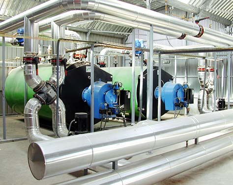
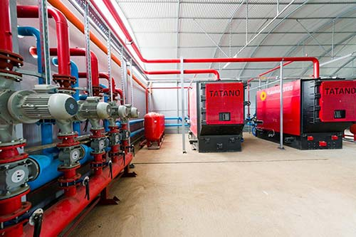
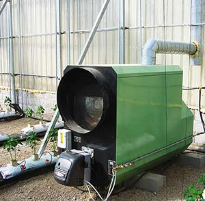
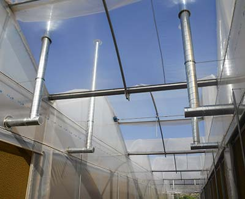
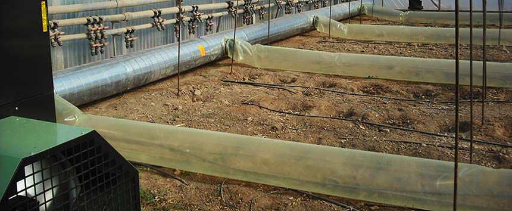

Calefacción por Agua
Sistemas de calefacción:
La mayoría de los cultivos intensivos en invernadero tienen ciclos que concurren durante la estación fría, un descenso en la temperatura de los cultivos por debajo del mínimo óptimo provoca distintos desórdenes fisiológicos, fisiopatías, parada vegetativa, etc. Por otro lado, la advección de heladas con temperaturas bajas extremas con la suficiente duración pueden producir la muerte del cultivo o la pérdida completa de la cosecha.
Nuestro departamento técnico le puede ofrecer, tras un adecuado estudio, la mejor solución para poder instalar su sistema de calefacción con la potencia adecuada y con los elementos indispensables para un correcto funcionamiento.
Sistema de calefacción central (agua caliente):
Los sistemas de calefacción central son recomendados en localizaciones con temperaturas mínimas exteriores bajas donde se precisan diferenciales de temperatura entre el interior y el exterior elevados, con cultivos que presentan una temperatura mínima óptima exigente, y en proyectos donde se pretende llevar a cabo la explotación con una elevada productividad y con un grado de tecnificación elevado.
En muchos casos la instalación está integrada como parte del sistema cultural del invernadero, sirviendo por ejemplo las redes de calefacción como base del sistema de raíles de carros de laboreo entre las líneas de cultivo, trasporte de la cosecha, movilización de maquinaria, etc., y en otros tantos casos como herramienta de manejo en el control de la transpiración y la humedad ambiente, control de enfermedades, etc.

En generadores de elevada potencia se emplean equipos con tres pasos de humos, con grandes superficies de caldeo y volúmenes de agua que permiten emplear los gases de la combustión como fuente de fertilización carbónica de los cultivos.

La instalación entonces dispone de un doble uso, y otros sistemas como depósitos de acumulación de agua caliente, sistemas de expansión, condensadores o recuperadores de humos conforman un único conjunto.
Calefacción por Aire
Sistemas de calefacción:
La mayoría de los cultivos intensivos en invernadero tienen ciclos que concurren durante la estación fría, un descenso en la temperatura de los cultivos por debajo del mínimo óptimo provoca distintos desórdenes fisiológicos, fisiopatías, parada vegetativa, etc. Por otro lado, la advección de heladas con temperaturas bajas extremas con la suficiente duración pueden producir la muerte del cultivo o la pérdida completa de la cosecha.
Sistema de calefacción con generadores de aire caliente:
Los sistemas de calefacción con generadores de aire caliente son sistemas recomendados en localizaciones con temperaturas mínimas exteriores suaves, con cultivos que presentan una temperatura mínima óptima no muy exigente, o para proyectos donde se pretende acometer una mejora en la explotación mediante una mayor precocidad y productividad del cultivo en fechas frías con un grado de tecnificación medio.
También son una solución adecuada en proyectos donde se precisa disponer de un equipamiento únicamente para su operación como seguridad frente a las heladas.

El funcionamiento de un generador de aire caliente, consiste en la generación de calor a partir de un determinado combustible en un hogar, parte integrante de un intercambiador aire – aire.
El combustible se quema en el hogar con la ayuda de un quemador atmosférico o presurizado según el modelo. En el lado secundario del intercambiador el calor es evacuado en el aire del invernadero con la ayuda de un ventilador normalmente helicoidal.

Un adecuado número y disposición de los generadores, junto con un adecuado caudal de aire y dardo de alcance de los ventiladores, permite una distribución adecuada del aire caliente en todo el volumen del invernadero.

/portadacalefagua.jpg)
/Calefaccionaireportada.jpg)
/esquema_aire.jpg)